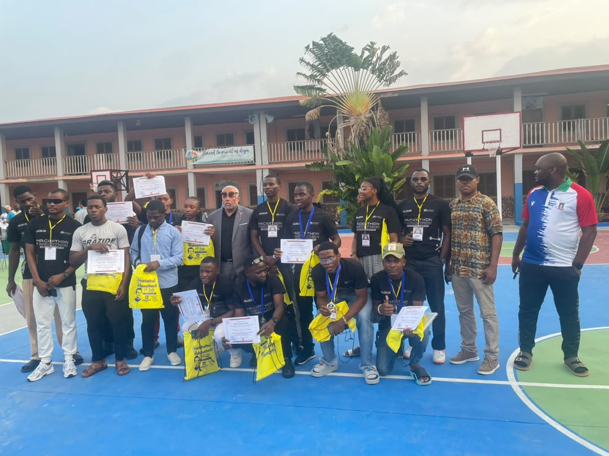

Académico
Nuevo ciclo formativo en Ciberseguridad
El INSTTIC lanza un nuevo programa especializado para formar expertos en seguridad informática.
Leer másFormamos el talento digital que impulsa el futuro de Guinea Ecuatorial
Solicita tu admisiónEl Instituto Superior de Telecomunicaciones, TIC es una institución educativa pública con sede en Djibloho, Ciudad de la Paz. Nuestra misión es formar técnicos especializados en Tecnologías de la Información y la Comunicación para contribuir al desarrollo digital del país.
Contamos con un claustro de profesionales altamente cualificados y una infraestructura moderna que facilita el aprendizaje práctico y la innovación.
Conoce másFormación integral en HTML, CSS, JavaScript, frameworks y bases de datos.
Diseño, implementación y administración de infraestructuras de red.
Análisis de datos, machine learning y aplicaciones de inteligencia artificial.
Aprende a usar aplicaciones en Red con tecnologías nativas y multiplataforma.
Protección de sistemas, auditoría y respuesta ante incidentes.
El INSTTIC lanza un nuevo programa especializado para formar expertos en seguridad informática.
Leer más
Conoce nuestras instalaciones y conversa con nuestros docentes el próximo 15 de mayo.
Leer más.jpeg)
Abierta la convocatoria de becas al mérito académico para el curso 2026-2027.
Leer másCompleta tu solicitud de admisión en línea y da el primer paso hacia tu futuro profesional.
Solicitar admisión